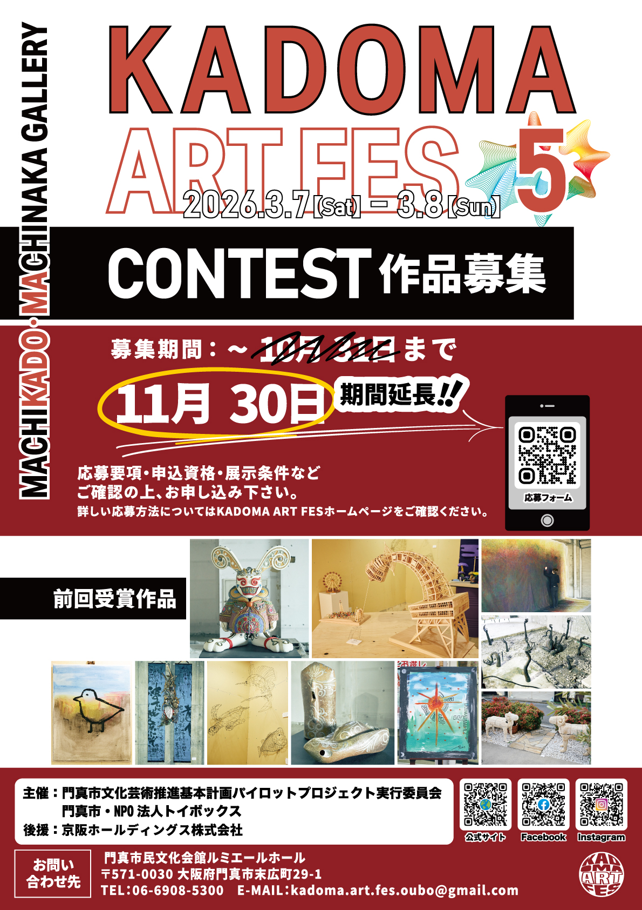
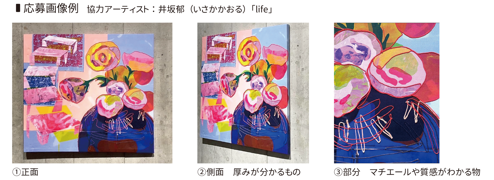

KAF CONTEST
KAF
CONTEST
作品募集

KADOMA ART FESは、様々なジャンルのアーティストの皆様のアイデアを取り入れ、アートの力で実現できる可能性を見出す事ができるアートフェスタを目指しています。 2021年より毎年開催しているKADOMA ART FESも本年で5年目となりました。 本年度も大和田駅前エリアでの「MACHIKADO MACHINAKA GALLERY」を開催致します。 地域の活性化と地元の方たちに喜んで頂けることを目指し職人の街、門真市ならではの『アートとアイデアの可能性』を感じる事ができるKADOMA ART FES 5をお楽しみください。
■2025年11月30日まで、募集期間延長しました。
募集要領および出品規定、選考条件などをご確認の上、ご応募いただきますようお願いいたします。
門真市文化芸術推進基本計画パイロットプロジェクト実行委員会
【募集終了】KADOMA ART FES 5 CONTEST
「MACHIKADO MACHINAKA GALLERY」を生かしてより多くの新進気鋭のアーティスト作品に光をあて、来場者・まちの人たちがアート作品により身近に接することができるようコンテストを開催いたします。
開催要項
- 募集期間：～2025年11月30日(日)まで
- 出品料：1点 1500円
- 募集作品：平面作品・立体作品（ジャンル問いません）
- 審査：一次審査は書類選考により行います。通過者には、作品提出による最終審査をご案内し、審査員による審査を行います。
- 展示期間：2026年3月7日 (土) 〜 3月8日 (日)
- 展示場所：大和田駅前広場 / 大和田南商店街 周辺
- 主催：門真市文化芸術推進基本計画パイロットプロジェクト実行委員会・門真市・NPO法人トイボックス
オンライン応募の場合
オフライン応募用紙ダウンロード
KADOMA ART FES 5 CONTEST応募要項
申込受付期間
～2025年11月30日(日)
郵送は当日の消印有効。メール・申込フォーム入力は当日の23：59まで送信有効。
出品費
1点 1500円
※振込手数料は出品者様負担となります。
※受付期間2025年11月30日までに既定の振込先にお振込みください。
参加資格
・野外展示可能作品
・高校生以上 ※プロ/アマ不問
・出展規約に同意
・作品種類:平面もしくは立体の芸術作品
◆平面作品の場合
・額のあり・なしは、問いません。
・ガラスを使用した額縁は安全面の理由から使用不可とします。アクリル製の額縁は使用可能です。
・最大サイズ 2,000mm×2,000mm以内 額縁付の場合 額を含めたサイズ
・イーゼルや吊り下げ等で展示が可能な強度を持たせてください。
◆立体作品の場合
・縦2,000㎜×横2,000㎜×奥行2,000㎜ 以内
・郵送またはご自身で搬入・搬出が可能な方に限ります（大型立体作品は要相談）
・郵送の場合、送料は出品者負担となります。
審査
一次審査：書類/作品写真 二次審査：審査員審査によって選出されます。
結果発表は審査終了後ホームページにて公表し、入賞者は連絡いたします。
賞
審査委員長賞（1作品）、門真市長賞（1作品）、他賞あり
作品展示について
本コンテストに応募された作品は、MACHIKADO MACHINAKA GALLERYにて展示を行います。
【展示期間】
2026年3月7日（土）8日（日）10:00～16:00（予定）
【展示場所】
京阪大和田駅南側会場（大阪府門真市野里町をはじめとする開催地域）
出品に関しての注意点
・1作品につき1出品料が必要です。（複数作品の出品が可能）
・出品料は、2025年11月30日までに指定の振込先へお振り込みください。
・一度お支払いいただいた出品料は、書類不備や出品辞退、審査結果に関わらず、いかなる場合も返金できませんのでご了承ください。（提出書類の内容にご注意ください。）
・審査・搬入に関するご連絡には、必ず期日までにご返信ください。ご返信がない場合は辞退とみなし、出品を取り消させていただきます。その際、出品費用の返金はいたしかねますのでご了承ください。
・一次審査を通過された作品は、2026年1月中旬に搬入していただきます。お預かりした作品は会期終了まで返却されませんので、あらかじめご了承ください。（期中に作品の展示予定がある場合は、別途ご相談ください。）
応募書類に関しての注意点
・作品紹介文・作家プロフィールは、展示の際のキャプションとして使用する可能性があります。誤字脱字にはお気を付けください。
・一次審査で必ず応募書類及び作品写真が必要となります。作品がわかる写真をご提示ください。
・立体の場合、立体作品は正面/横面/背面の最低3枚送付ください（最大5枚可能）
・平面および組み作品・インスタレーション作品の場合、展示状況がわかる画像を必ず提出してください。
作品画面のトリミング画像のみでの応募は審査対象外となります。

オンライン申込の場合
・５枚以上の場合は、ファイル便もしくはメールにて送付ください。
・ファイル名を「作家名-作品名-番号（例：山田太郎-星の夢-1）」の形式でご設定ください。
オンライン応募の場合
オフライン応募用紙ダウンロード
応募先：郵送
〒571-0030 大阪府門真市末広町29-1門真市民文化会館ルミエールホール内
KADOMA ART FES CONTEST係
応募先：メール
出品料振込先
枚方信用金庫 大和田支店
店005 普通0342014
門真市文化芸術推進基本計画パイロットプロジェクト実行委員会
KADOMA ART FES 5 CONTEST出展規約
◆出品に関して
１．野外展示可能作品のみ募集とします。(当日天候が悪い場合は予定した展示場所を変更し、屋内に展示します。)
２．特定の政治、宗教活動を示唆するような表現及び営利を目的とする出品はできません。
３．出品にかかる個人情報については適切に取扱い、目的以外のものには使用いたしません。
◆作品に関して
４．未受賞のオリジナル作品に限ります。同作品の他コンテストへの二重応募は失格となります。
５．素材の定着が悪く会場を汚す恐れがある場合は、搬入後であっても展示を断る場合があります。
◆権利・責任
６．作品に著作権・肖像権侵害等の疑義が発覚した場合、全て出展者の責任となります。
７．搬入、展示期間中、搬出に発生した事故・作品の破損等については、展示会場及び当実行委員会では責任を負いかねます。
８．著作権は応募者に帰属しますが、作品搬入後撮影した画像、映像、印刷物、ウェブサイトに掲載など KADOMA ART FESの広報に関する著作権使用の権利は KADOMA ART FES が有するものとします。また撮影した作品の写真の無料プログラム、販売用プログラム等へ使用する場合があります。
９．来場者によって撮影・SNS掲載・イベント紹介レポート等に掲載される可能性がありますのでご了承ください。
１０．作品の展示方法等についての異議申し立てはできません。
１１．展示作品等は、展示終了日から当委員会が定めた引取り期間に必ずお引取りください。引取期間終了後に作品は処分しますので、必ず期間内にお越しください。引取りがない場合、今後 KADOMA ART FES に関するイベントへの参加をお断りする場合がございます。
◆キャンセル・返金・連絡
１２．出展確定後のキャンセル（辞退）は原則としてお受けできません。やむを得ない事情で辞退される場合は、必ず事前にご連絡ください。なお、書類不備や審査対象外となった場合も含め、出品料の返金はいたしかねますので、あらかじめご了承ください。
１３．審査・搬入に関するご連絡には、必ず期日までにご返信ください。ご返信がない場合は辞退とみなし、出品を取り消させていただきます。その際、出品費用の返金はいたしかねますのでご了承ください。
◆展示・搬入出
１４．展示された作品のうち、特に優秀なものについては、別会場での巡回展等へ出展をご案内する可能性があります（任意参加）。
１５．作品の搬入を2026年1月中旬を予定しております。お預かりした作品は展示終了後～引き取り期間まで返却されませんので、あらかじめご了承ください。（期中に作品の展示予定がある場合は、別途ご相談ください。）なお、その他詳細については一次審査終了後にお知らせいたします。
１６．作品搬入時の交通費・運搬費、振込手数料は出展者が負担するものとします。
１７．展示中に一般の人が触れる恐れがあります。作品搬入をもって規約に同意したものとみなします。
１８．感染症対策として、内容を変更する場合があります。